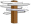

|

- Очерки психологии мировоззрения как основы просветительской практики ( Comments )
- От ничтожности к сопоставимости с Мирозданием или к вопросу о смысле существования человека ( Comments )
- Нобелевская лекция И.П.Павлова 'О русском уме' ( Comments )
- Проект "Бизнес, власть, общественность и СМИ в российской благотворительности" ( Comments )
- Дело Виталия Бунтова ( Comments )
- Дело Егора Новиковского ( Comments )
- Все мы сыны и дочери Человечества, но не собственность возомнивших о себе… ( Comments )
(все новости...)


Sitemap
"Кикабидзе будет защищать свободу Украины от России" |
||
| Главная-->Pro et contra-->Имперская политика России по отношению к Грузии-->Точка зрения Вахтанга Кикабидзе | ||
|
|
«После нового осложнения отношений России и Грузии Кикабидзе отказался от концерта в Москве к собственному 70-летнему юбилею, намеченному на 4 октября. «Очень грустно мне сейчас говорить о московском концерте, но, наверное, я не приеду. Посмотрите телевизор, загляните в Интернет - и увидите, на что похожи наши маленькие города. Невинные люди страдают, очень много убитых - как в такой ситуации я могу приехать и петь ?!» - сказал Вахтанг Кикабидзе. Ранее в интервью BBCRussian.com Кикабидзе рассказал, как он лично воспринимает конфликт: «Я не знаю, насколько там вы информированы по этому поводу. Последний месяц перед тем, как всё началось, до 8-го числа, каждый день с утра до вечера по грузинскому телевидению государственный министр говорил, что у нас должна состояться встреча с той стороной, чтобы договориться о каком-то сотрудничестве, сели за стол переговоров. И каждый вечер они бомбили грузинские деревни. День, два, три, тридцать, тридцать пять. И уже невозможно было, понимаете. Люди страдали. Были воздушные атаки. Были раненые среди мирных жителей.И так, в общем, втянули в это дело. Сейчас об этом российские СМИ не очень распространяются. Я-то знаю, что к чему и почему. В этом всё дело. А так, против народа никто ничего не имеет. И ещё: сейчас идёт сильная пропаганда, якобы там русскоязычных ущемляют в Грузии. Нет этого всего, это смешно. Вся Грузия вместе стоит. Грузия - очень интернациональная, маленькая страна, втянутая в войну с огромной империей, которая называется Российская Федерация. Вот так».
Об отношении к независимости вообще Вахтанг Кикабидзе сказал на канале СТБ (www.stb.ua) следующее: «Если вдруг на Украине будет такое происходить - я, наверное, сорвусь и полечу на Украину, и буду рядом стоять с теми людьми, которые будут защищать свободу Украины».
Материал взят из прокремлевской газеты в Украине «Итоги недели» (Мариуполь, №33(159), с. 3.). На первой странице этого пропагандистского издания он анонсирован под грифом «Враги России».
Жаль, что замечательный певец, друг людей доброй воли, Вахтанг Кикабизе не может привлечь подлецов к суду. Но главное, тем не менее, мы узнали - Россия с территории Южной Осетии подло принуждала Грузию к ответу, с тем чтобы напасть на неё со всей своей дурной силой и взять Тбилиси. Опять не вышло, но «кремлёвские мечтатели» не отчаиваются...
Феодосия, 29 августа 2008 г. Составитель и комментатор: Бродский Дмитрий